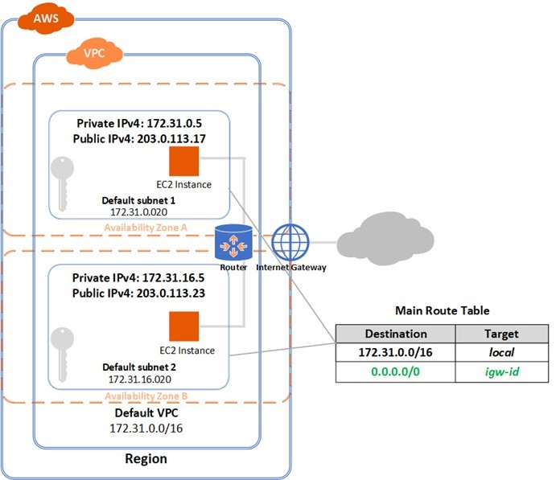
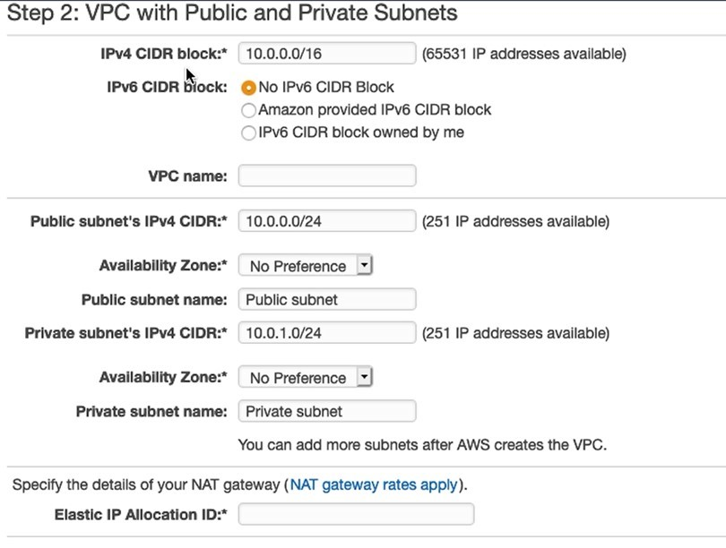
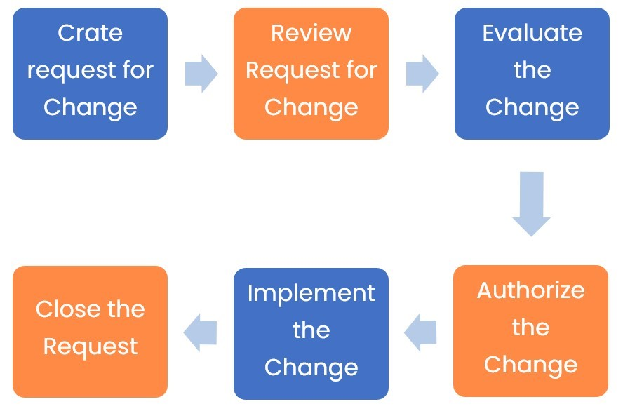
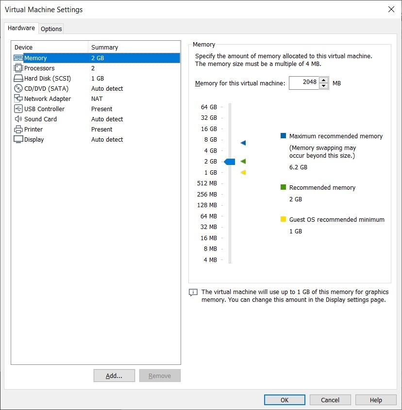
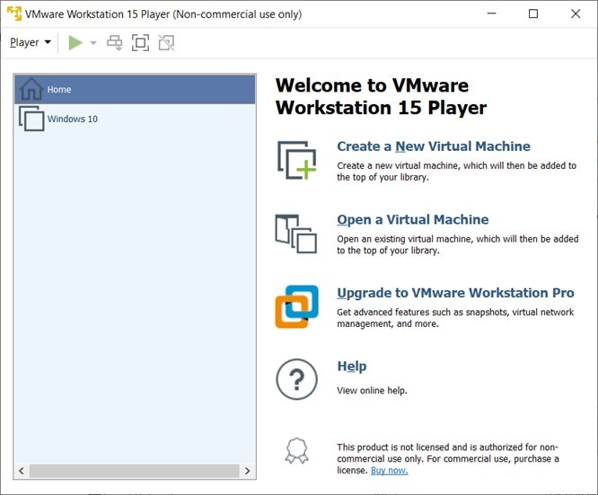

Introduction
9beca326-b493-4b0e-b3dc-d7dfb77df3c9
Welcome to the Infrastructure Solutions Practice Lab. In this module, you will be provided with the instructions and devices needed to develop your hands-on skills.
dc640c20-9434-45ea-b7c2-6d4d6a196bfc
Learning Outcomes
In this module, you will complete the following exercises:
- Exercise 1 - On-premises and Cloud Infrastructure
- Exercise 2 - Network Architecture
- Exercise 3 - Asset Management
- Exercise 4 - Change Management
- Exercise 5 - Virtualization and Containerization
After completing this module, you will have further knowledge of:
- On-premise and Cloud Infrastructure
- Cloud Access Service Broker (CASB)
- Physical Networks
- Software-defined Networking (SDN)
- Virtual Private Cloud (VPC)
- Virtual Private Network (VPN)
- Serverless Networks
- Asset Tagging
- Change Management
- Virtualization and Containerization
- Virtual Desktop Infrastructure (VDI)
Exam Objectives
The following exam objectives are covered in this lab:
- 2.1 Given a scenario, apply security solutions for infrastructure management
Note: Our main
focus is to cover the practical, hands-on aspects of the exam
objectives. We recommend referring to course material or a search engine
to research theoretical topics in more detail.
Lab Duration
It will take approximately 1 hour to complete this lab.
89816a20-56f2-42c5-bfa0-46f11f2986ba
Help and Support
For more information on using Practice Labs, please see our Help and Support page. You can also raise a technical support ticket from this page.
Click Next to view the Lab topology used in this module.
d2c53300-f951-45a9-9aa4-3d4ecae69e11
Lab Topology
This lab contains supporting materials for CySA+.

Click Next to proceed to the first exercise.
<
Home |
README >
CompTIA Cybersecurity Analyst (CySA+) Practice Labs
Exercise 1 - On-premises and Cloud Infrastructure
A few years back, the only options for IT
infrastructure hosting were either on-premises or in third-party data
centers. In the last few years, the cloud environment was established,
and several thousands of organizations moved their infrastructure to the
cloud. However, several organizations decided to still stick with a
more traditional on-premises infrastructure. There are good and bad
sides of both types.
In this exercise, you will learn about the on-premises and cloud infrastructure.
Learning Outcomes
After completing this exercise, you will have further knowledge of:
- On-premise and Cloud Infrastructure
- Cloud Access Service Broker (CASB)
Your Devices
This exercise contains supporting materials for CySA+.

On-premise and Cloud Infrastructure
You can either deploy an infrastructure on-premises or
in a cloud environment. The fundamental difference between the two is
where and how it is done. When you refer to an on-premises
infrastructure, the complete environment is in your control, such as
security, network, physical systems, and applications. However, in a
cloud environment, deployment is done at the vendor’s end, but the type
of control you have on the environment is dependent on the cloud
deployment model, which can be one of the following:
Software as a Service (SaaS)
In the Software as a Service model, an application is
licensed to users after they purchase a subscription. The license holder
must then renew their subscription to continue to use the full features
of the application. Typically, users will need a Web browser to access
the application. For example, GoToMeeting, which is hosted online.
Infrastructure as a Service (IaaS)
Infrastructure as a Service is an online model that
provides virtualization of underlying network infrastructures such as
physical computing resources, location, data partitioning, scaling,
security, and backups. Virtual machines, software-defined networking,
and virtual network devices are all considered parts of the IaaS model.
IaaS provides flexibility in upscaling and downscaling infrastructure as
required.
Platform as a Service (PaaS)
In Platform as a Service, a platform for development
is offered to users on a subscription basis. In this model, a set of
development tools are provided by the service provider. It reduces the
cost of purchasing these tools outright.
Network as a Service (NaaS)
With Network as a Service, clients have access to
additional network resources, such as switches and routers. The
third-party provider owns the resources and provides it to an
organization either through a fixed fee or a fee based on component
usage.
Security as a Service (SECaaS)
Security as a Service offers cloud-based security
solutions. When you implement this solution, it removes the burden of
having the on-premises hardware.
Advantages and Disadvantages
There are several advantages and disadvantages of both the environments:
Control
The biggest advantage of an on-premises infrastructure
is that you have complete control over the physical as well as the
logical environment. You can customize the said environment as per your
business requirements. You can also add or remove hardware and software
as and when required. However, with the cloud, you have little control
over the infrastructure. For example, the physical environment is not in
your control.
Cost
In the on-premises infrastructure model, the cost of
deployment is very high. You have to purchase the physical hardware,
which can include desktops, servers, switches, firewalls, routers, and
various other networking and security devices. You also have to purchase
licenses for software that the users are going to use. You also have to
maintain your infrastructure or outsource maintenance to a third-party.
When referring to the cloud environment, they mostly work with the
pay-per-use or subscription model. This means that you do not have to
pay the upfront cost of deploying hardware or software. You can start
using the environment, and depending on the payment model, and you have
to pay accordingly. Another big advantage is that you can customize your
infrastructure on the fly.
Redundancy
With an on-premises infrastructure, you have to
protect against redundancy of the entire environment by adding another
site. This can add a huge cost to the organization. However, in the
cloud environment, the infrastructure is already replicated or can be
replicated to another geography. This adds redundancy to the
infrastructure and data.
Security
With on-premises infrastructures, security can be set
at a certain level as per the requirement of the organization. Depending
on the regulations or any type of compliance requirements, such as ISO 27001 or PCI-DSS,
organizations can add or remove the security controls. However, in the
cloud environment, data security is always a question. Several
organizations in the Banking and Finance sectors tend to use the
on-premises infrastructure that is required to provide the optimum level
of security.
Compliance
The organizations may have to comply with certain regulations, such as HIPAA or PCI-DSS.
Therefore, organizations can customize their IT environment with
specific security controls. On the other hand, the cloud service
provider may be compliant with these regulations, but it is your
responsibility to perform a due diligence. Ultimately, you are
responsible for your data.
Cloud Access Service Broker (CASB)
In the simplest terms, a CASB is a mediator between a
cloud consumer and service provider. The key role of a CASB is to bridge
security gaps from the cloud consumer to the cloud service provider,
who may be running SaaS, PaaS, or IaaS. A CASB can also extend the
organizational security policies into the cloud environment and enforce
them on cloud components and services as they are accessed. Users may be
using various types of devices, such as laptops or mobile. The same set
of security policies, which are applied in the on-premises
infrastructure, can be extended to the cloud infrastructure.
It seems that generally, organizations are quite
apprehensive about putting their data in the cloud. However, with the
CASB implementation, there are enough security controls and methods that
can be applied to protect data. With a CASB, you can use a security
control, such as a Web Application Firewall (WAF) or secure Web
gateways. Other security offerings that a CASB may offer:
- Malware prevention
- Cloud governance
- Risk assessment
- Data Loss Prevention (DLP)
- User and Entity Behavior Analytics (UBEA)
- Threat prevention
- Single sign-on
- Data Encryption
- Identity and Access Management (IAM)
dc2a295a-ab17-4b52-8e1c-80389d10a470
<
Home |
README >
CompTIA Cybersecurity Analyst (CySA+) Practice Labs
Exercise 2 - Network Architecture
A network architecture consists of multiple
components. Physical components play a key role in the architecture. You
may also have a virtual environment, but even for it to run, you still
need to have the physical components available. You can have different
types of networks and components within a single IT environment. You may
have software-defined networking (SDN), a virtual private network
(VPN), or you may be using cloud-based technologies like VPC or
serverless.
In this exercise, you will learn about various types of components of a network.
Learning Outcomes
After completing this exercise, you will have a further knowledge of:
- Physical Networks
- Software-defined Networking (SDN)
- Virtual Private Cloud (VPC)
- Virtual Private Network (VPN)
- Serverless Networks
Your Devices
This exercise contains supporting materials for CySA+.

Physical
Each organization will either have a small or large
physical IT infrastructure. For example, if an organization has an
entire IT infrastructure in the cloud environment, users will still
have laptops and mobile devices that they use to connect to remote
resources in the cloud. Laptops and mobile devices make up the physical
environment. On the other hand, you may have an organization that has a
large infrastructure that they run from their data center, which
consists of routers, switches, servers, firewalls, and many other
components.
It could also be possible that an organization uses a
hybrid model, which has some servers in the on-premises datacenter and
the rest of the servers in the cloud. When there is physical
infrastructure, the organization is responsible for physical and logical
security.
Software-defined Networking (SDN)
Software-defined networking (SDN) helps
administrators to initialize, control, change, and manage network
behavior dynamically. SDN is there to address static architecture of
traditional networks, as they do not support dynamic or scaleable
computing and storage needs of more modern computing environments such
as data centers. This is done by decoupling or disassociating the system
that makes decisions about where traffic is sent (the SDN controller,
or control plane) from the underlying systems that forward traffic to
the selected destination (the data plane).
Virtual Private Cloud (VPC)
A Virtual Private Cloud (VPC) is a logically isolated
part of the cloud environment. Almost all cloud service providers allow
you to use VPCs using your account. You can create a VPC and add
various resources within it. There are several components that you can
use within the VPC. Some of the key components are:
- IP address ranges
- Subnets
- Route tables
- Network gateways
- VPC endpoint
Figure 2.1 Diagram showing the VPC: Showing VPC architecture on AWS.
You can think of a VPC as a small, isolated cloud
within a larger cloud. You are free to configure the type of VPC that
meets your requirements. A VPC for a customer is isolated from the rest
of the VPCs that are running within the same cloud. You can provision a
VPC within the cloud environment, create a virtual network, and then
launch various resources within the network.
In some of the cases, a cloud service provider may give you the following choices to configure a VPC:
- A VPC with a single public subnet
- A VPC with public and private subnets
- A VPC with public and private subnets and hardware VPN access
- A VPC with private subnet and hardware VPN access
You are free to choose the type of VPC you want to
configure. If you are looking to configure an isolated private subnet,
you can configure it and then connect it to the on-premises data center
using hardware VPN access, which will use IPSec encrypted tunnel for
traffic routing.
For example, this is the example of Amazon AWS, where you are configuring a VPC with public and private subnets.
Figure 2.2 Diagram showing the VPC configuration: Showing VPC configuration with a public and private subnet.
Virtual Private Network (VPN)
VPNs allow users remote access and allows them
specific access to resources on the internal network. Using the public
network, which is the Internet, the user can connect to the VPN server
using his or her login credentials. Based on the access granted to the
user, he or she will be able to access resources on the network. To
connect to and access the network, you need to use a client installed on
the user’s end to connect to the VPN server.
There are primarily two types of VPNs:
Site-to-Site VPN
where a VPN is established between Customer Premises
Equipment (CPE) devices found at the location of each site.
Specifically, these are the routers found at each location. A VPN is
established between them such that the clients at each site are
oblivious to any VPN configurations. They communicate with each other as
if, from their point of view, they are on the same private network. The
VPN routers on each end provide the VPN functionality between the two
sites.
Client-to-Site VPN
where a VPN is established between a single user, and
a VPN enabled server or router. The server is located on the corporate
network and accepts and establishes VPN requests from clients. Clients
must have the appropriate VPN software and the appropriate credentials
to establish the VPN. A VPN server can allow multiple client connections
simultaneously.
Serverless
Serverless architecture, also known as Function As A Service (FaaS),
is based out of the cloud. A developer does not have to set up the
infrastructure, which is completely managed and handled by the cloud
service provider. The developer has to focus on developing an
application rather than spending time in setting up the infrastructure.
With the serverless technology, the applications are built directly in
the cloud environment, and applications run on the servers as they do in
the on-premises infrastructure. As and when required, there is
automatic provisioning and scaling of the underlying infrastructure.
There is often confusion between PaaS and FaaS.
Both follow the same concept of running an application in the cloud.
However, the underlying architectural differences are there. In PaaS,
the entire application is run as a single unit, which means that the
scaling can only be done at the application level, However, in FaaS,
the scaling is done at the function level because the application is
composed at the function level. As and when required, the functions can
be scaled individually. This saves many system resources because you may
have only one function that consumes more resources than the others.
Serverless architecture is good to use when you have a
limited number of functions. If you have an existing application, you
will need to architect it again to run as small functions that can run
independently.
dc2a295a-ab17-4b52-8e1c-80389d10a470
<
Home |
README >
CompTIA Cybersecurity Analyst (CySA+) Practice Labs
Exercise 3 - Asset Management
Assets are critical for an organization. Each
organization will have several types of assets, such as hardware and
software. Asset Management is a process that helps an organization
maintain and manage its assets. The information for all IT assets can be
maintained in a centralized database, which is known as the
Configuration Management Database (CMDB). It helps you collate asset
information, such as:
- Type
- Make
- Owner
- Service record
- Maintenance record
- Allocation record
Based on the information maintained in the CMDB, it
is easy for an organization to view the complete set of assets that are
functional or non-functional.
In this exercise, you will learn about assets and asset tagging.
Learning Outcomes
After completing this exercise, you will have a further knowledge of:
Your Devices
This exercise contains supporting materials for CySA+.

Asset Tagging
Before understanding types of assets, it is important
to understand what an asset is. It is anything that has value to an
organization. It could be servers, software, devices, the information in
any format, services, people, or even intangibles, such as reputation
or brand.
Assets typically have owners and custodians.
- Owner: performs asset management and is responsible for handling, disclosure, and retirement of assets.
- Custodian: is responsible for protecting data
as per security requirements. The custodian provides accessibility of
assets to end-users. They are also responsible for quality assurance and
data validation.
Types of assets in an organization are:
- People: Includes employees and customers.
- Hardware: Includes servers, desktops, laptops, and any devices that are being owned by the organization.
- Software: Includes operating systems and applications that are used for business purposes.
- Data: Includes business and employee information.
- Physical environment: Includes the physical infrastructure, which includes the business premises.
- Processes: Includes the processes and procedures that enable an organization to run its business.
- Third-parties: Includes partners, and associated hardware/software.
Asset Inventories
Asset inventories are critical when figuring out what
to protect and how much to spend protecting it. Asset inventories
should be checked periodically to verify accuracy. Inventories should
track details necessary for the following reasons:
- Asset identification
- Date of acquisition
- Security Classification
- Descriptive details
- Asset Location
- Information necessary for backup and restore, disaster recovery
- Asset owner and custodial information
Asset tags
Asset tags are used to track hardware. An asset tag
has a barcode or a serial number. When you scan the barcode, the
complete hardware details of the item are fetched from the inventory
database. Consider the example of a grocery store. When you purchase an
item, the cash counter person simply scans the barcode on the item, and
it is added for checkout.
You can replicate the grocery store’s scenario in
your organization where you can use an asset tag, which will then be
placed on each hardware item, such as a laptop, desktop, printers,
servers, and so on. By scanning the tag, you can maintain assets in an
inventory management system. You can put a number series on the tags,
which, when entered into the inventory management system, will pull out
all information from the date it was acquired to it was disposed of. An
asset tag can be an RFID-based, which can help you track them. The
number of assets and paper labels may help you mark an asset, but they
cannot track them.
You can use an asset tag with a bar code, which does
not require any manual intervention when entering or pulling out
information about a tag. For example, instead of typing the asset
number, you can scan the barcode to retrieve complete information about
an asset. The number of assets and paper labels may help you mark the
asset, but they are manual methods and are prone to human error.
dc2a295a-ab17-4b52-8e1c-80389d10a470
<
Home |
README >
CompTIA Cybersecurity Analyst (CySA+) Practice Labs
Exercise 4 - Change Management
No network can ever be static. There will always be
changes due to various reasons, such as improving security or even
adding new functionality. For example, you may be upgrading an
application with a new version. However, the smallest change in the
network environment can cause chaos and, therefore, needs to be handled
with caution and using proper processes and procedures.
In this exercise, you will learn about change management.
Learning Outcomes
After completing this exercise, you will have a further knowledge of:
Your Devices
This exercise contains supporting materials for CySA+.

Change Management
In a network environment, you may want to implement a
new application or add a new server. Before doing any such activity,
you need to be aware that there is a change that is going to take place
on the network. The change can work without causing any disruption, or
it can simply cause chaos, which you would want to avoid.
For example, you want to add a new security
application on the network. In a typical scenario, you would go ahead
and install and configure the application without giving much thought of
the consequences that you may have to go through later on. If it works
fine without any disruption to the network or other services, it is
fine. What if it does not? You want to protect the disruption or any
unwanted results from this application. Therefore, the safest route is
to go through the change management process.
The change management process helps you make a change
in an environment in a systematic manner. The change that you are going
to make is thought through and then approved by a set of designated
personnel. The change that you want to implement needs to be tested,
approved, deployed and documented.
There are a certain steps that you need to perform
during the process. However, different organizations may have slight
variations. Some organizations may simply follow the 6-steps process,
and some may have more steps. There is no hard rule on the number of
steps as long as you have implemented the basic set of steps to fulfil
the change management criteria.
The broad level steps are:
Figure 4.1 Diagram showing the Change Management Phases: Showing the six different phases the Change Management process.
- Create Request for Change: First, you need to
create a Request for Change (RFC), which requires information such as
description, configuration items, reason, and information about the
person requesting the change. It will also require information, such as
cost, timeframe, justification, and fallback plan.
- Review Request for Change (RFC): A team of
designated personnel reviews the RFC. If the information with the RFC is
found to be appropriate, it is then approved. If not, the RFC is
rejected and returned to the person who submitted it.
- Evaluate the Change: The change that has to
be implemented, its impact needs to be assessed. The change needs to be
thoroughly evaluated and then documented in the Change Evaluation
Report.
- Authorize the Change: After a thorough evaluation of the change is completed, the change needs to be authorized for implementation.
- Implement the Change: After a change is
authorized, it can be implemented. Before the implementation, a backup
plan is also prepared in case the change fails, or the results are
unexpected. The implementation team should be able to fall back to the
original configuration.
- Close the Request: After the change is implemented, a Post Implementation Review (PIR) is prepared. It contains the details of the change.
dc2a295a-ab17-4b52-8e1c-80389d10a470
<
Home |
README >
CompTIA Cybersecurity Analyst (CySA+) Practice Labs
Exercise 5 - Virtualization and Containerization
Scalability is always a challenge when it comes to
networks, systems, and applications. When you need to scale up, you have
to add the physical hardware. However, to a great extent, this problem
is solved by virtualization and containerization. Both can help you
increase agility in the IT operations and can help you scale up and
scale down the infrastructure as required.
Virtualization and containerization are similar but
work with different approaches. The only fundamental similarity in both
of these concepts is that they create and work with self-contained
packages. However, beyond this, they differ in their functionalities and
use cases.
In this exercise, you will learn about virtualization and containerization.
Learning Outcomes
After completing this exercise, you will have a further knowledge of:
- Virtualization and Containerization
- Virtual Desktop Infrastructure (VDI)
Your Devices
This exercise contains supporting materials for CySA+.
Virtualization and Containerization
Virtualization allows a system’s physical hardware to
be emulated in the form of virtual systems. Each physical system has a
certain amount of physical resources, such as CPU, memory, network
adapter, and storage. When you install an operating system, it can use
system resources. However, there is only one operating system that can
run per physical system.
With the use of virtualization, you can run multiple
virtual systems. Virtualization allows a single processor to act as
multiple processors. When you run multiple virtual machines on the
system, virtualization helps the processor to isolate tasks.
You need to have a hypervisor, which is responsible
for virtualization in a system. A hypervisor allows multiple operating
systems to run in parallel and consume the system resources. These
operating systems run within a shell, which is known as a virtual
machine. Each virtual machine works like a normal system, except that it
does not have any physical hardware. The physical system that runs the
virtual machine must have a hypervisor to run a virtual machine.
Hypervisor makes the creation of virtual machines
possible on a physical computer. The virtual machine is a guest computer
within a hypervisor with its operating system and synthetic hardware.
You can also edit the virtual machine settings and customize them to
suit your needs.
Figure
5.1 Diagram showing the virtual machine properties: Showing the virtual
machine configuration properties in Type 2 hypervisor.
There are two types of hypervisors:
Type 1: The Type 1 hypervisor is not dependent
on an operating system. Type 1 hypervisors run on a bare-metal system
and does not require an operating system in between to host the virtual
machines. In the Type 1 hypervisor, the order of layers is as follows:
- Hypervisor
- Operating System
- Hardware
Type 2: In the Type 2 hypervisor, the order of layers is as follows:
- Guest OS
- Hypervisor
- Operating System
- Hardware
The operating system, which is layer 3, is installed
on the base hardware. On the operating system, you need to install a
TYPE 2 hypervisor, such as VMware Workstation. Then, on the top, you
will have the guest virtual machines.
Figure 5.2 Diagram showing the VMware Workstation Player: Showing the virtual machine in the Type 2 hypervisor.
Containerization
Containers work on the concept of compartments. They
use the operating system from the host to deploy applications. You can
deploy multiple containers on a single host, and each container can run
different applications. However, the operating system will remain the
same on all containers on a single physical host. Therefore, if you need
to run a container with a different operating system, you need to
deploy them on another physical host.
One of the great advantages of a container is that it
runs using the operating system and base system resources; it is
lightweight and can start as soon as a system boots. However, this can
also lead to a disadvantage because if there is a vulnerability in the
OS kernel, then all containers running on the operating system will have
the same vulnerability.
Containers are useful when you need to run multiple
applications using the same operating system. You can quickly create a
container and run the application within it.
There are typically four layers for a container:
- Operating system
- Container engine
- Binaries and libraries
- Application
Containers should be used when you need to have the
native performance for an application. Since you are running part of the
operating system within a container, there is generally less overhead,
and you get good performance for hosting the application.
There are several fundamental differences between virtualization and containerization. Some of the key differences are:
Speed: Containers start with the operating
system as it is loaded. Therefore, the start is immediate. However,
virtual machines need to load the complete operating system.
Resources: Containers start immediately with
the operating system, and therefore, there is little memory consumption.
On the other hand, there can be multiple virtual machines running on a
single physical host, and each virtual machine will require its share of
system resources. This can put the load on the physical server, which
will impact the virtual machines ultimately.
Security and isolation: Containers run within
the operating system. Virtual machines run separately and in isolation.
Therefore, the virtual machines tend to be more secure than containers.
On the other hand, the containers can isolate the applications and their
data only at the process level, and they are less secure. If the
operating system is compromised, then the containers can also be
compromised.
Portability: Containers are much smaller in
size, and therefore, they are easy to port. Virtual machines tend to be
larger, and therefore, portability can be a problem. When you port a
virtual machine, you need to include configuration files and libraries
along with the virtual machine.
Operating System: A virtual machine can run an
independent operating system on a physical host. Containers can run
only the operating system that the host is running.
Virtual Desktop Infrastructure (VDI)
Virtual Desktop Infrastructure or VDI was coined by VMware, which later became the industry standard terminology. VDI allows
a user to use an endpoint device, such as a thin client or a mobile
device, and connect to a virtual desktop image. The VDI works like a
conventional system except that it is in a virtual form and is hosted
either in a data center or in the cloud. A VDI can work on a one-to-one or one-to-many ratio. In a one-to-one ratio, a VDI is assigned to a single user. In a one-to-many ratio, a VDI is assigned to multiple users.
Different vendors have different methods to access a VDI using an endpoint. For example, there are three key players in the VDI market:
- Citrix: Uses Independent Computing Architecture (ICA) and Enlightened Data Transport (EDT)
- VMware: Uses Blast Extreme and PC over IP (PCoIP)
- Microsoft: Uses Remote Desktop Protocol (RDP)
VDIs are hosted on a centralized server and
run in the form of virtual machines. A hypervisor hosts the virtual
machines, which are then deployed as VDIs. Whenever a request is generated from a user, the connection broker works as the central authority to handle that request.
VDIs can be of two types:
- Persistent: Works more like a personalized desktop. A user is assigned a VDI, which can be customized by the user. When the user closes the VDI, the changes are saved.
- Non-persistent: Works more like a temporary desktop. A user connects to a VDI, where the user works, but when the user logs off from the VDI, the changes are discarded.
There are several benefits of using a VDI. Some of the key benefits are:
- Remote connectivity: Users can use their thin client or a mobile device to connect with the remote VDI.
All files and data are stored on the servers. This provides the
flexibility of using different devices for connectivity with VDI.
- Cost: Using VDI provides huge cost
savings. You do not need to install, configure, and maintain high-end
desktops and laptops. The users can work with the systems or any device
with minimal configuration.
- Security: The data is stored on the centralized server, and therefore, it is more secure.
- Management: Since the VDIs are running on centralized servers, they are easy to manage. You can update or patch them in a centralized location.
dc2a295a-ab17-4b52-8e1c-80389d10a470
86b3caf2-2504-4e20-a81b-2fcb2368c8d2
Keep all devices that you have powered on in their current state and proceed to the review section.
Review
Well done, you have completed the Infrastructure Solutions Practice Lab.
2abaca70-efa1-4fe5-94fb-ad1777bfc242
90c72a5a-227e-4ba5-b3e8-75fe22ac9762
fc7e04e4-f4a8-4553-a3f5-b67c513e3487
47f6bdbd-fb00-4d35-a13e-2becc2424e3d
71d180a4-50ad-40d5-a8be-27ae15b4d6d3
c3dd3a66-bdae-443e-820f-ec097dbd0e21
aaaaaaaa-1111-1111-1111-193f35a24fe3
Summary
You completed the following exercises:
- Exercise 1 - On-premises and Cloud Infrastructure
- Exercise 2 - Network Architecture
- Exercise 3 - Asset Management
- Exercise 4 - Change Management
- Exercise 5 - Virtualization and Containerization
You should now have a further knowledge of:
- On-premise and Cloud Infrastructure
- Cloud Access Service Broker (CASB)
- Physical Networks
- Software-defined Networking (SDN)
- Virtual Private Cloud (VPC)
- Virtual Private Network (VPN)
- Serverless Networks
- Asset Tagging
- Change Management
- Virtualization and Containerization
- Virtual Desktop Infrastructure (VDI)
Feedback
067744a4-4299-4662-b5be-04dbb636a007
Shutdown all virtual machines used in this lab. Alternatively, you can log out of the lab platform.